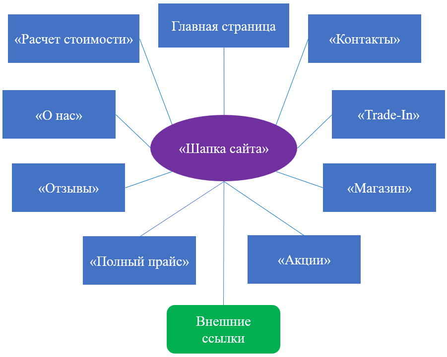
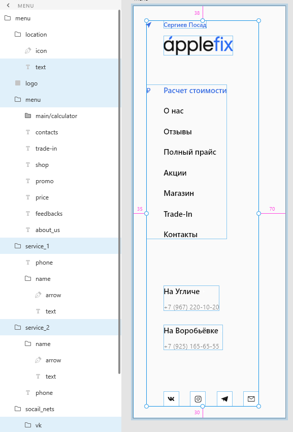
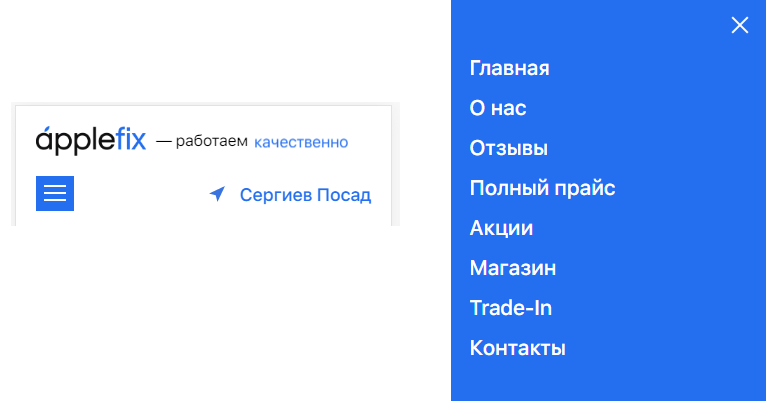
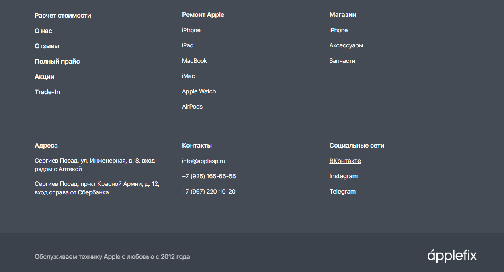

Перед непосредственной разработкой, программисту необходимо чёткое представление структуры страниц будущего веб-сайта. Базовые решения шаблонов страниц сайта с использованием CMS-системы WordPress не являются идеальным вариантом для текущего проекта. Поэтому, необходимо разрабатывать макеты страниц интернет-ресурс «с нуля», основываясь на действующий веб-сайт компании, для последующего их программирования и внедрения в CMS WordPress.
В рамках данного проекта, осуществлен полный редизайн интернет-ресурса, его структуры с целью повышения юзабилити страниц, внешней привлекательности, а также усовершенствования функционала. После проведенных исследований существующего интернет-ресурса сервисного центра «Apple Fix», при разработке нового рекламно-информационного сайта и базы данных решено использовать похожую схему структурных элементов существующего веб-сайта. Наиболее подходящий вариант – макет с одной схемой расположения элементов сайта, повторяющихся на каждой странице. Элементы навигации, в виде меню, расположены статично слева, рекламно-информационная часть центрирована между навигацией и правой части экрана, дополнительная информация располагается в самом низу каждой страницы.
Перед разработкой макетов и дизайна страниц сайта необходимо обозначить основные структурные элементы и их расположение, с учетом принципов будущей верстки:
1. «Шапка» сайта (header);
2. Рекламно-информационная область контента;
3. «Подвал» сайта (footer).
При разработке макетов всех страниц рекламно-информационного сайта используются следующие стили оформления:
1. по цветовой гамме – светлый, трехцветный, с основными кодами цветов палитры HEX: #2B6BF3, #444B55, #FAFAFA;
2. по восприятию – нейтральный с ярким выделением некоторых элементов;
3. по расположению контента – минимализм (на всех страницах, кроме главной, расположены только элементы призыва к целевым действиям потенциальных клиентов);
4. по тематике – рекламно-информационный сайт компании.
Для визуального представления, на рисунке 1 показана схема нового рекламно-информационного сайта «Apple Fix» относительно выбранного структурного элемента header. Данный элемент является интерфейсом с гиперссылками для перемещения на другие страницы сайта, как внутренние, так и внешние. Чаще всего – это первый структурный модуль, на который обращает внимание посетитель. Основные задачи header в решении данного проекта – отобразить основные бизнес-идеи компании, ее деятельности, а также поспособствовать быстрому решению проблем потенциальных клиентов.


Элемент header, содержащий в себе навигационную панель, должен быть всегда доступным и присутствовать перед глазами посетителей в любой части сайта. Содержимое разрабатываемого элемента включает в себя множество других элементов с соответствующей информацией и функциональностью. Не стоит забывать о том, что на основании полученных данных при анализе существующего веб-сайта компании «Apple Fix», большим спросом пользуется его мобильная версия, поэтому необходимо разработать макеты двух вариаций. Так как смартфоны посетителей веб-сайта не слишком удобны для чтения длинных текстов, необходимо минимизировать объем контента. Для этого, необходимо оставить только ключевые пункты, влияющие на пользовательский путь.
При разработке «шапки» сайта в Adobe XD, она будет именоваться как «menu». Информативность контента выражается в:
- представлении бренда компании (логотип, фирменный стиль);
- описании деятельности компании (прайс-лист услуг ремонта, магазин, акции, Trade-In);
- описании разносторонней информации о компании (контактные данные, в т.ч. социальные сети).
Результат разработки десктопной (полной) версии сайта представлен на рисунке 2. Размеры рабочей области данной версии элемента header и его содержимого составляет не более 20% ширины экрана устройства с разрешением full HD (1920x1080px). Элемент header статичен и присутствует на каждой тематической странице всей структуры рекламно-информационного сайта компании.
Мобильная версия «шапки» сайта с навигационной панелью и содержимым располагается, как правило, в самом верху сайта. Для удобства, и исключения эффекта нагромождения почти весь функционал структурной панели необходимо спрятать в кнопки, при нажатии на которые, отобразится дополнительное необходимое меню навигации.

Примером разработки макета мобильной версии является рисунок 3. Размеры области всех элементов структуры сайта и их содержимого составляет 100% ширины устройства посетителей.
«Подвал» страницы – это не тот элемент, который игнорируют пользователи. Напротив, правильно оформленный footer в понимании интернет-маркетинга – ещё один уровень воронки продаж. Чаще всего, в этом элементе размещают контакты данные, социальные сети, сведения об авторстве, карту сайта (дублируются элементы header). Он должен присутствовать на каждой странице интернет-ресурса и обозначать ее завершение при пролистывании контента.
В решениях проекта footer содержит в себе карту элемента header, а также отдельные информационные ссылки контентного блока (рисунок 4).
Таким образом, разработанный макет страниц разрабатываемого сайта в Adobe XD позволяет создать логику взаимодействия между элементами шаблонов. Это достигается путем расстановки функциональных связей между выполненными объектами. Результатом таких действий является прототип будущего рекламно-информационного сайта компании, который может оценить заказчик для дальнейшего согласования перед этапом программирования. В добавок к этому, при импорте шаблонов в аналогичную программу работы с векторной графикой, можно рассмотреть попиксельную разметку элементов и их CSS-свойства для ускорения разработки сайта при программировании.

Таким образом, разработанный макет страниц разрабатываемого сайта в Adobe XD позволяет создать логику взаимодействия между элементами шаблонов. Это достигается путем расстановки функциональных связей между выполненными объектами. Результатом таких действий является прототип будущего рекламно-информационного сайта компании, который может оценить заказчик для дальнейшего согласования перед этапом программирования. В добавок к этому, при импорте шаблонов в аналогичную программу работы с векторной графикой, можно рассмотреть попиксельную разметку элементов и их CSS-свойства для ускорения разработки сайта при программировании.